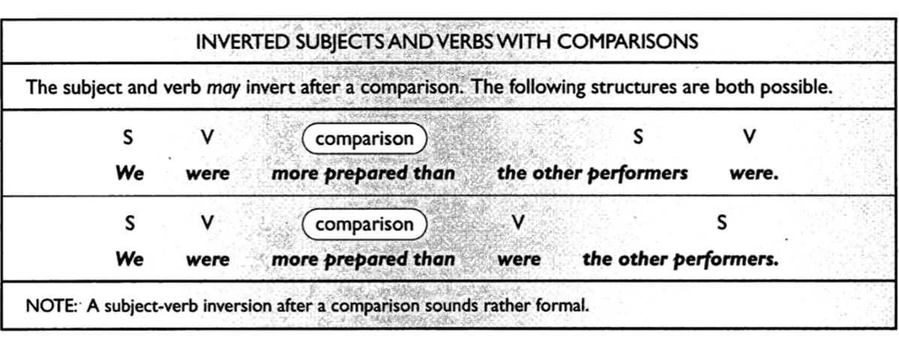

Materi Belajar
TOEFL — Skill 19
Inverted Subject-Verb with Comparison
Pelajari teori lalu uji dengan latihan interaktif (feedback langsung).
SKILL 19 — Invert Subject And Verb With Comparison
Invert Subject And Verb With Comparison
Penukaran pada ‘subject’ dan ‘verb’ dapat muncul pada clausa setelah ‘comparison.’ Penukaran tersebyt bersifat ‘opsional.’ Perhatikan contoh berikut
My sister spends more hours in the office than John
My sister spends more hours in the office than John does
My sister spends more hours in the office than does John
Pada kalimat-kalimat diatas ‘comparison’ yang digunakan adalah ’more … … than.’ Berikut adalah contoh soal TOEFL :
The result of the current experiment appear to be more consistent than ____ the results of any previous tests.
Them
Were
They were
Were they
